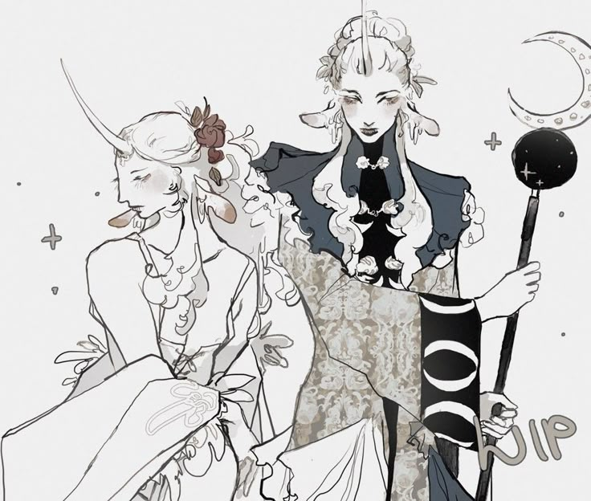
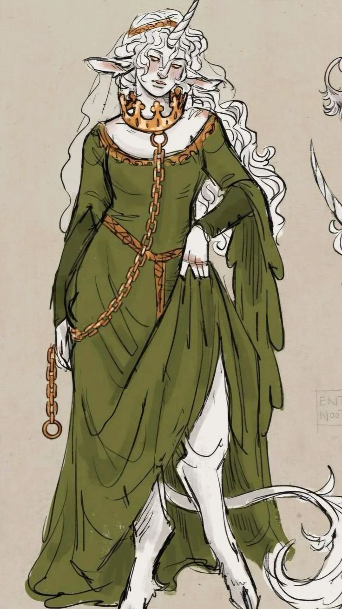
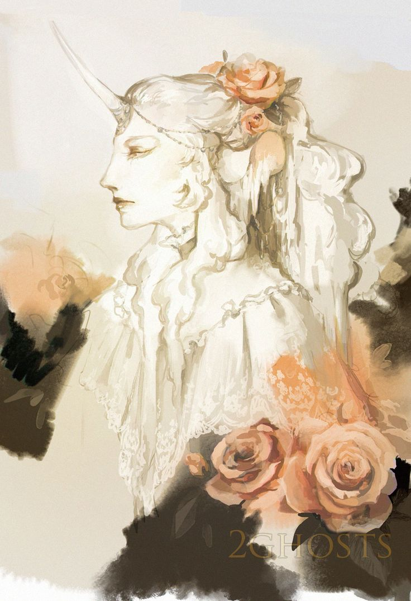
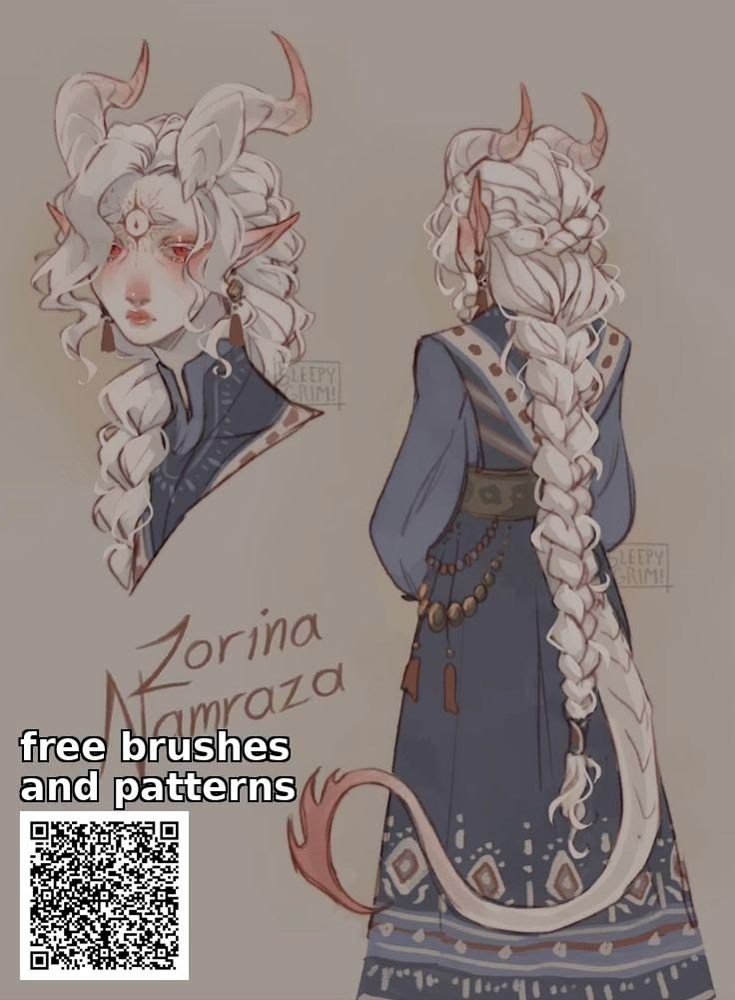

A Família Snø governa Hvit, a mais setentrional das cidades-estado de Aucrib, desde que a própria deusa reconheceu na magia adormecida dos meio-unicórnios algo que merecia florescer. Hoje, entre neve e feitiços, a família mantém viva a chama do Instituto Machado Azul — escola, lar, e o único lugar onde uma criança pôde simplesmente aparecer e ser acolhida.
✦ nomenclaturas do instituto
Os Títulos de Hvit
ARCHMAGUS
Arquimago(a)
Título dos regentes de Hvit, à frente do Instituto Machado Azul e de tudo o que se ensina sob seu teto.
MAGISTRA
Mestra
Título de quem ensina dentro do Instituto, guiando a próxima geração de magos e magas.
NOVICE
Noviça(o)
Título de quem ainda aprende os primeiros feitiços, sem posição formal dentro da hierarquia.
UNBOUND
Livre
Título genérico para quem faz parte da família sem magia ou cargo formal dentro do Instituto.
✦ OS CONDES DE HVIT

✦ família snø
Olivia e Oliver Snø
Os gêmeos, cujos ancestrais mágicos já vagavam pelas terras nevadas havia muito tempo — até que Aucrib viu, na espécie deles, uma oportunidade de explorar a magia adormecida em seus corpos. Juntos, gerenciam o Instituto Machado Azul.
✦ A MESTRA DO INSTITUTO

✦ família snø
Clon Snø
A irmã mais nova, professora do Instituto Machado Azul. Sua personalidade silenciosa e metódica encanta a todos — isso, somado a uma voz excepcionalmente angelical.
✦ A FAMÍLIA DE CLON

✦ família snø
Purpure Snø
Esposo de Clon — os dois se conheceram em um jantar oferecido pelo próprio Instituto, quando ele tocava piano enquanto ela cantava no palco.

✦ família snø
Sadan Snø
Filha adotiva do casal. Foi acolhida após aparecer misteriosamente nas portas do Instituto Machado Azul — e, de qualquer maneira, acabou adotada pela família.